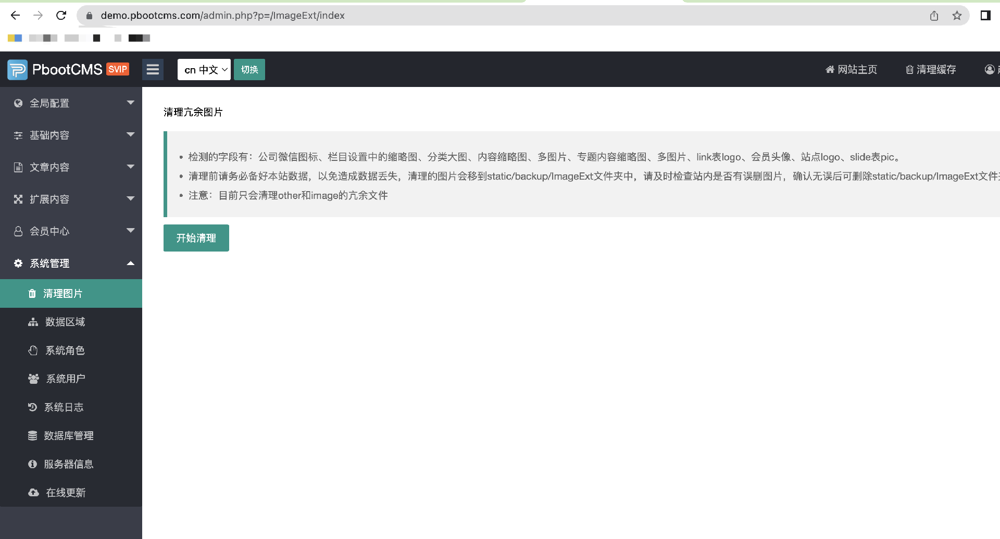

PbootCMS V3.2.1 build 2022-09-21
1、新增冗余图片清理，鉴于pcode为系统自增，可能会存在占用的情况，请自行在后台菜单管理/Menu/index中添加菜单，具体参数参照项目下static/backup/sql/V3.2.1-update.sql文件即可。
具体功能菜单截图如下：

2、UEditor-plus编辑器跟随官方Gitee更新至2.4.0版本。
3、修复UEditor-plus编辑器本地保存弹窗不显示信息的问题。
4、session文件夹自动清理时间从7天间隔修改为3天。
5、针对近期有些虚拟主机二级目录伪静态首页返回404的问题做了兼容处理。
2022-09-27更新：
有些用户反馈图片清理无法正常使用，经过排查，宝塔搭建的服务器环境默认会禁用掉exec函数，目前已替换为了其他方式进行移动文件的操作，请更新至3.2.1的用户及时后台更新。